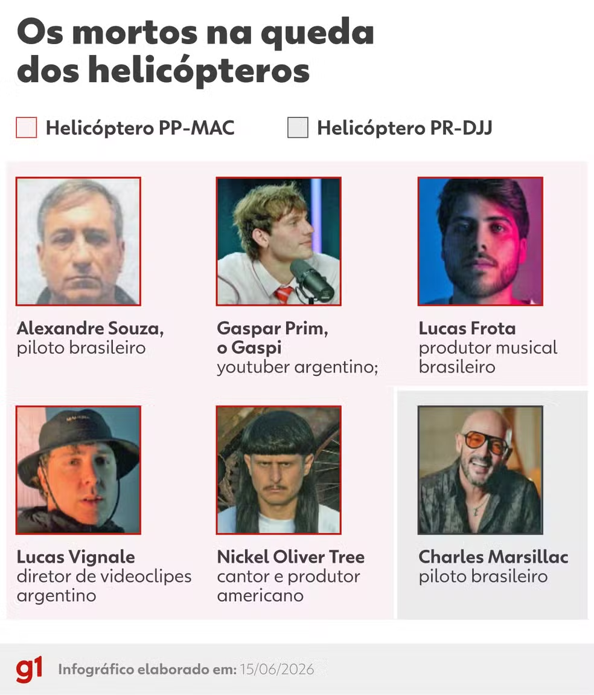

Acidente de helicóptero no Rio de Janeiro deixa 6 pessoas mortas.

📸: G1
Acidente de helicóptero no Rio de Janeiro deixa 6 pessoas mortas.
Cenipa (Centro de Investigação e Prevenção de Acidentes Aeronáuticos) e Anac (Agência Nacional de Aviação Civil) estão em investigação para apurar acidente fatal.
O desastre da manhã de domingo (14) no Rio de Janeiro, alertou moradores com os barulhos e explosões seguintes, causando um grande alvoroço. As aeronaves que se chocaram eram, ao todo, seis pessoas.
Em um Helicóptero estava o piloto Charles Marsillac, brasileiro. Não se tem informações para onde estava indo, mas que Bell 206B (helicóptero) não pegou fogo ao cair, porém a vítima não resistiu às ferragens.
No outro giroplano (PP-MAC) estava o piloto Alexandre Souza, brasileiro; Gaspar Prim, youtuber argentino; Lucas Frota, produtor musical brasileiro; Lucas Vignale, diretor de videoclipes argentino e Oliver Tree, cantor norte-americano. Esse sim, caiu entre carros elétricos e explodiu ao atingir o solo.
Quem são as vítimas?
Oliver Tree Nickell, também conhecido como Oliver Tree foi um cantor norte-americano, rapper, produtor musical, comediante e cineasta. O auge do seu sucesso se alastrou em 2020, com as músicas “Miss you”, junto com Robin Schulz e “Life goes on”; juntas, contam com mais de 800 milhões de visualizações.
Também era conhecido pelo seu visual caricato, com cortes de cabelo e roupas únicas.
Gaspar Pim Díaz, mais conhecido como Gaspi, foi um youtuber, humorista e personalidade argentina da internet. Sua fama foi composta por seu humor provocador, marcada pela saudação “buenass” e por sua voz grave.
No ano passado, ganhou mais visibilidade internacional ao participar do evento de boxe entre criadores de conteúdo, o “La Velada del Año V”.
Lucas Frota, DJ e produtor, começou na carreira com 12 anos e morava nos EUA há quase uma década. Com apresentações pelo país americano e pela Europa, Lucas contava com diversos selos especializados em música eletrônica.
O que as autoridades dizem?
Em nota oficial, a FAB (Força Aérea Brasileira) diz que as investigações serão realizadas pela Cenipa. A Anac também está apurando a situação das aeronaves e pilotos envolvidos.
Nota do Cenipa
“[...]
Durante a ação inicial, profissionais qualificados e credenciados aplicam técnicas específicas para a coleta e confirmação de dados, preservação de elementos, verificação inicial dos danos causados à aeronave ou pela aeronave, além do levantamento de outras informações necessárias à investigação.”
Nota da Anac
“[...]
A Anac lamenta o ocorrido, se solidariza com familiares e amigos das vítimas e reitera a todos os passageiros de voos da chamada aviação geral que verifiquem a situação de empresas e aeronaves antes do embarque. Essa checagem pode ser feita na plataforma Voe Seguro. A Agência destaca ainda que o transporte ilegal de passageiros é crime e colocam vidas em risco.”
Feito por: dino_raaaawr